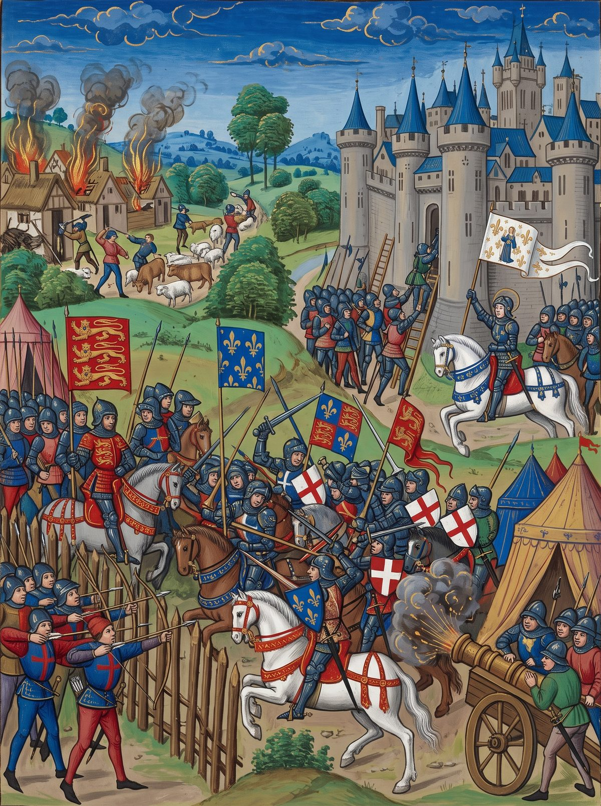

1337 · 1453 — prototype jouable des règles 0.1
Choisissez votre camp. L'IA joue l'autre. Chaque coup adverse est rejoué pas à pas : la carte jouée, les dés et les lieux touchés sur le plan.
Chacun joue sur son ordinateur ou son téléphone. Chaque coup est enregistré : jouez en direct ou revenez plus tard, la partie vous attend.
Sans compte ni inscription : chacun ouvre ce jeu sur son appareil. À la fin de votre tour, le jeu vous donne un message à envoyer à votre adversaire (SMS, WhatsApp, e-mail). Il le colle dans son jeu, joue, et vous renvoie le sien.
Jouer en ligne à deux, chacun sur son appareil
Chargement du moteur…
Présence, Domination ou Contrôle de la région donnent sa valeur, +1 par place forte contrôlée, +1 par lieu contrôlé voisin de la capitale adverse. La différence va au score. Les cartes de décompte arrivent par phase : la frise en haut de l'écran montre lesquelles.